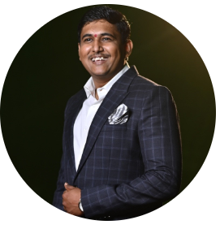

About
Who am I??? ⚡

Senior Solutions Architect
My name is Nitin Rohidas (if you're reading this you probably know that already). I did my Bachelor's degree in Information Technology (IT) and started as a Java developer in HSBC Software Devlopment India, Pune. The initial years of my developer experience primarily involved working in the Servlets and the J2EE stack. I was an above average developer and used to get the things done with good quality.I played the role of a defect prevention champion and also enjoyed critical defect fixings of frameworks and age old defects of the system.
I progressed my career by learning newer technologies like Spring , Spring boot, DustJs & webservices etc , eventually playing the role of Technical lead.As a Technical Lead my job involved not just solving the problems of the developers but also to coach them to get better at their day to day work. I started taking up additional responsibility of SCRUM management as well, but didn't liked it that much. Delivered some critical projects in extreme pressure siuations which got the best out of me.I further became an expert on resolving performance issues by using Dynatrace tool to analyse high CPU programs which saved considerable $$$ for my organization. My design skills and deeper understanding of design patterns, MIcroservices exposure & frequent representation in the architecture and design approval meetings got me enough exposure to get into the Architecture Role.I was leading Architecture work for 3 teams on their architectural roadmaps and EPIC/Feature designs in the Scaled Agile Framework.I was also an active speaker in organzation Tech events , contributing to Innovation initatives & conducting many technical sessions for the developer community. I wasn't spared from interviewing candidates on Architecture and Leadership roles on weekends and weekdays for critical positions and new teams setup.Earned lot of appreciations on my work from the Home office Architecture team.
After a while, I thought to go for a change as I was looking out for work on Cloud Technologies like AWS, GCP. Fortunately, I was able to seize opportunities by upskilling myself by self learning Docker and Kubernetes. I was now part of core enginnering projects like migration from PCF to On-Prem Kubernetes.I lead the migration effort by doing the POC and also guided teams by taking up sessions and publishing blogs on Kubernetes.As of today, am the SME in the the Onboarding & Data domain supporting big clients from Global & Commercial banking.I currently work as a Lead Architect and contribute in the Reference Architectures, API Standards , API Governance & Digital transformation, Workflow management & Containerzation space.I have done many clear choice papers and also working on publishing my White Paper on Observability Strategy
My recent interests in Open Telemtry have gotten me in to the Observability space and I am helping teams understand how and learn OpenTelemtry. Do read my articles on medium !!
- Git: Check my Github out
- City: Pune, India
- Email: nitin.rohidas@gmail.com
Discovering the components of software, server management and devops as I work in this industry continues to fascinate me while increasing my passion for software development exponentially. The world would never be short of problems to solve or applications to build which makes me very happy. Hope to share my passion with you soon.
Interests/Hobbies
Movies
Books
Reading
Watching Football
Testimonials
Nitin was a great teammate during our time working together. He asked detailed questions and provided analysis/design solutions during larger product builds. Nitin was able to collaborate with all teammates regardless of level. He was able to communicate direction and ensure timing was being met. He worked on complex solutions that helped drive revenue for the company. I would gladly work with Nitin again in the future and would recommend him in a IT lead and/or Solutions role.

Rob Stout
Assistant Director of Engineering, Prncipal Financial Group, USA
Nitin has very clear concepts and so it is easy to collaborate with him. He brings in not only what to do , but takes a lot of interest in how to do it and helps team at the ground level. I find his question and thought-process very intuitive and he is quick to lead conversations in right direction so that the problem is solved in right way, with minimum fuss. He is well-versed in Java, Design patterns, Architectural styles, Cloud Tech Stack, front end tech-stack , His understanding of working with legacy or modern systems is very good.
Himadri Das
Architect at Principal,Pune
I have worked with Nitin for the past 3 years at the Principal Financial Group. Nitin was playing a Solution Architect role helping 3 of our Pune India scrum teams break down work, solution ideas for implementation, code review, education, understand our core architecture patterns, and be forward thinking and keep our developer staff moving in the right direction. Our business concepts are very complex in the financial services business, especially around investments, fee/expense calculations, discounts, and collection. Nitin was very sharp and could tackle any problems. Nitin's architecture knowledge grew a lot in the 3 years of working with him, especially around REST and Pub/Sub architecture patterns. He has always had great communication with our US and Pune staff and he has grown to be very well respected in our department. Nitin recently announced he is moving to another company and we will miss his leadership, ideas, and fun personality dearly!
Patrick Utz
Technical Product Manager at Principal Financial Group
Nitin is a perspective abundant. It's what makes him look at things from multiple aspects and have a good discussion before decision. A very important quality that helps him build answers and solutions at workplace and personally. A very good team member and ready to go a mile to help as he keeps team first. Great to have a colleague like him

Ajay Shah
Program Manager at Principal Global Services
Nitin might be the most analytical person I know. He is always fast to respond, intelligent and comes up with creative solutions to difficult problems. He is my person to-go for the techno professional problems. He was always available when needed and did not hesitate to share his knowledge. I’d gladly work with Nitin again.
